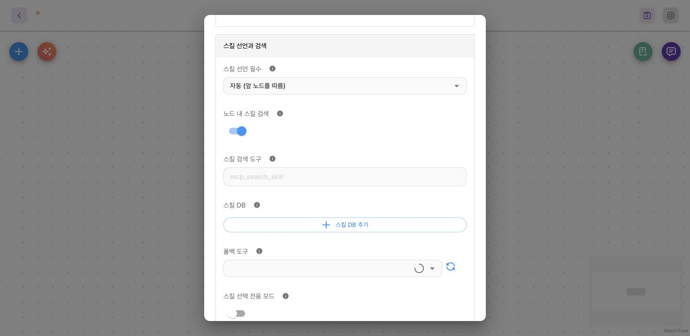
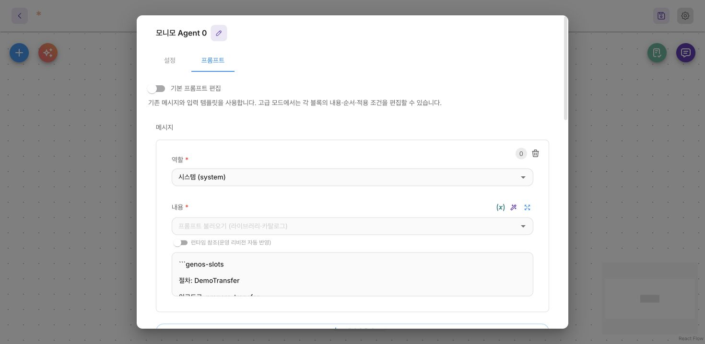

현재 시스템 프롬프트나 선언된 스킬 내용에 있는 genos-slots 코드 블록으로 절차를 정의합니다. 에이전트는 없는 값을 질문하고, 후보·검증도구를 호출한 뒤 slot_fill로 값을 명시적으로 확정합니다. 필요한 모든 슬롯에 유효한 최신 검증 근거가 있어야 입구도구가 열립니다. 선언은 엔진이 파싱하고 일반 모델 문구에서는 제거합니다.
설정 화면
스킬 경로를 쓰는 경우
모니모 Agent → 설정 → 스킬 선언과 검색에서 스킬 선언 필수·노드 내 스킬 검색·스킬 DB를 확인하세요. 스킬 문서로 절차를 제공한다면 해당 문서가 검색·선언되는 경로를 연결합니다.

확인할 항목: 스킬 선언 필수 = 사용 안 함인 노드는 스킬 검색·선언·슬롯 실행에 참여하지 않습니다. 자동과 항상 필수는 플로우 구성에 맞게 고르세요. 이 옵션은 슬롯값을 입력하는 칸이 아닙니다.
노드 지침에 직접 선언하는 경우
모니모 Agent → 프롬프트 → 메시지에서 역할을 시스템 (system) 으로 지정하고 내용에 genos-slots 코드 블록을 넣습니다. 스킬 문서에 선언한다면 노드에 같은 절차를 중복해서 넣을 필요가 없습니다.

확인할 항목: 선언은 시스템 지침이나 선언된 스킬 내용에 둡니다. 입력 메시지나 사용자의 채팅에 붙이는 것이 아닙니다. 프롬프트 아래 내부 도구 설명 → slot_fill은 모델이 읽는 설명을 편집하는 곳이며, 절차 선언을 넣는 곳과 다릅니다. 지침을 수정한 뒤에는 워크플로우를 저장해야 실행에 반영됩니다.
데모로 검증과 잠금 확인하기
아무 값도 확정하지 않은 상태에서 입구도구를 호출해 보세요. 그다음 각 슬롯을 검증하고 확정하세요. 계좌를 다시 검증하면 금액도 재검증해야 하는 이유를 확인할 수 있습니다. 검증도구 호출은 근거를 기록하고, slot_fill은 그 근거로 값을 확정합니다.
합성 동작 데모 · 실제 도구 호출 없음 · 크게 열기
절차 선언하기
아래 키는 파서가 읽는 실제 키이므로 한국어 이름을 유지하세요. 입력포맷과 검증인자는 각각 한 줄짜리 JSON 객체로 작성해야 합니다.
절차: DemoTransfer
입구도구: prepare_transfer
입력포맷: {"qvo":{"account":"$슬롯.계좌.account","amount":"$슬롯.금액"}}
- 슬롯: 계좌
질문: 어느 계좌를 사용할까요?
후보도구: lookup_accounts
검증도구: verify_account
값스키마: {"account":"string","bank":"string"}
검증인자: {"account":"$value.account","bank":"$value.bank"}
- 슬롯: 금액
질문: 금액은 얼마인가요?
검증도구: verify_amount
값스키마: number
검증인자: {"amount":"$value","account":"$슬롯.계좌.account"}
이 예제는 검증도구가 최상위 account, bank, amount 인자를 받고, 입구도구는 qvo로 감싼 인자를 받는다고 가정합니다. 금액 검증 인자에서 계좌 슬롯을 참조하므로 금액은 계좌에 의존합니다. 계좌를 바꾸거나 다시 검증하면 금액의 승인도 무효화됩니다.
실제 호출 순서
-
에이전트가
lookup_accounts를 일반 도구로 호출합니다. 해당 도구의 입력 스키마를 따릅니다. 이 브랜치에서는 새slot_options호출을 사용하지 않습니다. -
선택한 객체의 필드로
verify_account를 호출합니다. 일반적인 응답은{"success":true,"payload":{"mcpSuccess":true,"mcpMessage":"승인됨"}}입니다.payload.mcpSuccess는 boolean이어야 하며, 최상위success만으로는 검증 통과가 아닙니다. 이전{ok:true, feedback:..., value:...}형식도 읽습니다. -
에이전트가 검증 결과 전체를 읽고
slot_fill({slot:"계좌",value:{account:"DEMO-A",bank:"예제 은행"}})을 호출합니다. ID만으로 후보 객체를 복원하지 않습니다. -
현재 계좌를 기준으로 금액을 검증한 뒤
slot_fill({slot:"금액",value:50000})을 호출합니다. -
모든 슬롯이 유효한 근거와 함께 확정되면
prepare_transfer를 실행할 수 있습니다. 인자는 서버의 슬롯 상태와 선언한입력포맷으로 구성합니다.
여러 절차가 열려 있으면 slot_fill에 procedure도 필요합니다. 검증도구 호출은 근거만 기록하며 슬롯을 자동으로 채우지 않습니다. slot_fill은 그 근거로 확정할 뿐, 검증도구를 대신 호출하지 않습니다.
기술 사양과 주의사항
스키마와 인자 규칙
| 선언 | 현재 규칙 |
|---|---|
질문 |
에이전트가 참고할 문구. 실제 질문·카드 문구는 모델이 작성 |
후보도구 |
선택적 조회 도구. 현재는 이를 지정하면 검증도구도 필요 |
검증도구 |
직접 입력 슬롯에서는 생략 가능. 생략하면 별도 업무 검증 없이 값 확정 가능 |
값스키마 |
string, number, 또는 string·number·boolean 필드로 구성한 평면 객체 |
검증인자 |
$value, $value.field, $슬롯.<name>[.<field>]로 검증 인자 매핑 |
입력포맷 |
$슬롯, $슬롯.<name>, 필드 경로로 입구 JSON 구성. $$...는 문자 그대로의 $ 시작값 |
입력포맷이 없으면 객체 슬롯의 필드를 한 단계 펼쳐 입구 인자를 만듭니다. 같은 필드에 서로 다른 값이 있으면 SLOT_INPUT_KEY_CONFLICT로 거절합니다. 포맷을 지정하면 중첩 구조와 qvo를 직접 정합니다. 슬롯은 체인의 자동 감싸기 규칙을 물려받지 않습니다.
예상과 다를 수 있는 동작
-
검증을 시도할 때마다 호출 전에 해당 슬롯의 이전 승인을 취소합니다. 통신 실패도 예외가 아니며, 의존 슬롯의 승인도 무효화됩니다. 새 검증이 성공한 뒤에도 다시 명시적으로 확정해야 합니다.
-
캐시에 남은 이전 승인값으로 최신 검증 결과를 대신할 수 없습니다. 값만 있고 검증 근거가 없는 이전 체크포인트에서는 입구도구가 잠긴 상태로 유지됩니다.
-
단일 값의
number는 현재 숫자로 읽을 수 있는 음수 아닌 정수 금액입니다. 쉼표와 앞뒤 공백은 정리할 수 있지만 음수와 소수는 확정되지 않습니다. 범용 숫자 스키마가 아닙니다. 객체 필드의number는 별도의 필드 타입 검사를 따릅니다. -
객체 슬롯에는 선언한 필드가 필요합니다. ID로 객체를 조회하지 않으며, 공개
slot_fill스키마는 임의의 중첩 객체를 지원하지 않습니다. -
열린 슬롯마다 검증도구의 소유 관계가 유일해야 합니다. 여러 슬롯에 같은 검증도구 이름을 쓰면
SLOT_VALIDATOR_CONFLICT가 발생합니다. -
이 브랜치에서 작성자가 선언한
검증인자는 최상위 참조만 복원합니다. 중첩qvo안에$value나$슬롯.계좌.account를 넣으면 복원하거나 의존 관계를 등록하지 않습니다. 모델이 넘기는verify_args는 별도의 재귀 처리 경로를 사용합니다. 여기서는 최상위 매핑을 사용하세요. 입구 인자의 재귀입력포맷은 별도로 지원합니다. -
검증인자의 고정 상수는 현재 정확한 일치 조건이 아니라 안내로 취급합니다. 예를 들어limit:100을 선언해도limit:99로 호출한 검증이 성공하면 받아들일 수 있습니다. 참조값과 의존 관계는 별도로 검사합니다. 이 차이가 해결되기 전에는 검증도구에서 업무 제약을 강제하세요. -
request_user_input으로 묻는 것과slot_fill로 확정하는 것은 별개입니다. 에이전트는 대화에 이미 나온 값을 다시 묻지 않고 사용할 수 있습니다. 본문으로만 질문하면 턴이 끝나며, 같은 턴의 카드 결과가 생기지는 않습니다. -
슬롯 캐시 TTL은 30분이며 저장할 때 갱신합니다. 입구도구 성공 뒤에도 같은 과업에서 값을 수정할 수 있습니다. 수정·재검증·중복 호출·이전 승인 무효화 규칙은 아래 수명주기 절을 보세요. 워크플로우 FINISHED에서 과업을 해제하며 STOPPED의 응답 대기는 유지합니다. 상태 만료가 대화 이력을 지우지는 않습니다.
슬롯 파서와 처리기 · 검증 근거 사례 · 슬롯 저장소.
선언 문법과 입력포맷의 세부 규칙
절차마다 절차, 입구도구와 하나 이상의 슬롯을 씁니다. 슬롯은 질문·후보도구·검증도구·값스키마·검증인자를 가질 수 있습니다. 후보도구를 선언하면 검증도구가 필수이며 없으면 CANDIDATE_VERIFIER_REQUIRED입니다. 동시에 열린 절차에서 한 검증도구를 여러 슬롯이 공유하면 SLOT_VALIDATOR_CONFLICT입니다.
입력포맷은 한 줄 JSON 객체입니다. $슬롯 전체, $슬롯.<이름>, 중첩 필드와 .0 인덱스를 참조할 수 있습니다. 고정 JSON 값과 배열도 허용하며 타입을 보존합니다. $로 시작하는 고정 문자열은 $$로 씁니다. 문자열 안의 부분 보간·JavaScript 계산·반복 변환은 지원하지 않습니다. 참조가 없으면 추측하거나 생략하지 않고 실패합니다.
| 원하는 인자 | 입력포맷 |
|---|---|
| 슬롯 전체를 qvo로 | {"qvo":"$슬롯"} |
| 계좌 객체만 qvo로 | {"qvo":"$슬롯.계좌"} |
| 원래 슬롯 구조 유지 | {"계좌":"$슬롯.계좌","금액":"$슬롯.금액"} |
| 이름 변경과 고정값 | {"amount":"$슬롯.금액","currency":"KRW"} |
| 인자 없는 호출 | {} |
생략 시 객체 슬롯을 한 단계 펼치며 스칼라·배열·null은 슬롯 이름을 유지합니다. 중복 키의 값이 같으면 합치고 다르면 SLOT_INPUT_KEY_CONFLICT입니다. 일반 체인의 자동 qvo 감싸기와 구분합니다.
검증 근거를 읽는 방법
후보·검증도구는 자신의 원래 스키마로 모델이 직접 호출합니다. qvo가 필수면 빈 조회도 {"qvo":{}}로 보내야 합니다. slot_options는 사용하지 않습니다. 후보 결과의 전체 객체를 읽고 선택한 객체를 slot_fill에 보냅니다. 후보 ID만으로 서버가 원본을 찾아 주거나 후보 목록 소속 여부를 자동으로 보장하지 않습니다.
검증 Input 또는 응답 payload의 같은 이름 정규화 필드와 채울 값을 대조합니다. 응답이 있다고 자동 병합하지 않으며 입력값과 정규화값 중 무엇을 확정할지는 에이전트가 선택합니다. 양쪽 어디에도 없는 값은 승인하지 않습니다. 별도 이름 매핑은 검증인자 또는 verify_args로 연결합니다. 작성한 검증인자의 고정 상수는 호출 안내이며 추가 승인 조건으로 강제되지 않는 현재 제한이 있습니다.
검증 시작 시 해당 슬롯과 의존 슬롯의 승인을 취소합니다. 같은 인자를 다시 검증해도 실제 도구를 다시 호출합니다. 실패·예외·규격 불명확 후에는 과거 성공을 재사용할 수 없습니다. 검증 성공 뒤에도 slot_fill이 필요합니다.
실행 후 값 수정과 승인 무효화
최신 브랜치에서는 입구도구 성공 뒤에도 같은 과업에서 slot_fill로 수정할 수 있습니다. 수정 자체가 입구도구를 실행하지는 않습니다. 새 검증·확정을 마친 뒤 모델이 명시적으로 입구도구를 다시 호출해야 합니다.
같은 인자로 연달아 호출하면 SLOT_ENTRY_ALREADY_EXECUTED입니다. 값을 바꾸면 그 실행에서 나온 대기 승인·브릿지가 무효화됩니다. 예전 액션을 재개하면 SLOT_CONTINUATION_INVALIDATED이며 후속 도구를 실행하지 않습니다. 이미 시작된 외부 작업을 취소하거나 되돌리는 보장은 아닙니다.
잘못된 카드 답변은 승인 토큰을 소모하지 않으므로 수정해 다시 제출할 수 있습니다. 거절 분기가 새 승인·브릿지를 만들면 그 흐름을 마친 뒤 절차를 닫습니다. 일반 genos-chain과 독립 HITL·브릿지의 동작을 이 슬롯 정책으로 바꾸지는 않습니다.
취소와 완료와 재개
워크플로우 FINISHED에서 실행이 저장한 열린 과업과 선언·허용 목록을 해제합니다. 한 Agent 노드의 응답 반환만으로 전체 과업을 닫지 않습니다. STOPPED 상태의 입력·승인 카드는 유지합니다. 새 실행이 더 최신 상태를 저장했으면 예전 실행의 종료가 이를 지우지 않습니다. ERROR·TERMINATED의 보관은 기존 정책을 따릅니다.
Redis 복원과 checkpoint claim은 기존 상태·owner·revision을 사용합니다. 중복·오래된 액션 방어를 전역 exactly-once 보장으로 해석하지 않습니다. 전송 timeout 뒤 업무 결과가 불명확하면 임의 재시도 전에 실제 업무 상태를 확인해야 합니다.
이전 스킬에서 전환할 때
후보도구에는 검증도구를 추가하세요. 예전 자동 qvo 합성에 의존했다면 입력포맷을 명시하세요. 구버전 대화의 봉인 목록은 출처를 구분할 수 없어 자동 해제하지 않으므로 새 대화가 필요할 수 있습니다. 진행 중 checkpoint도 새 기본 인자 규칙을 적용받을 수 있어 배포 전 재개 경로를 확인해야 합니다.
근거: agentic-slot-candidates.md · slot-entry-args.md · slot-edit-after-entry.md · skill-task-completion.ko.md.